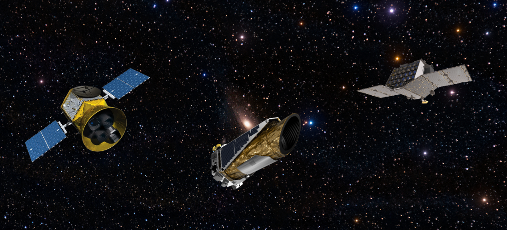

What is it?
Asteroseismology is the study of how stars pulsate. It turns out that most, if not all, stars pulsate -- at least to some degree. These oscillations are the product of waves being generated inside the stellar interior and being reflected and refracted at different layers. This results in both incoming and outgoing waves which interfere, producing trapped standing waves. These trapped waves cause the star to pulsate.
The properties of trapped waves depend on the thing that they are trapped in. That means the properties of stellar pulsations are defined by the properties of their host star. As asteroseismologists we use this fact to learn about what is going on inside stars. Surprisingly, we can actually collect observational data for the pulsations of a large number of stars. As the star periodically expands and contracts, it brightens and dims. High precision telescopes can pick up on this change in brightness, allowing us to actually measure the way a large number of stars pulsate.
What has it taught us?
Unlike most data that we collect for stars, asteroseismic data is directly sensitive to conditions deep below the surfaces of stars. As the deep interior of stars evolve much more rapidly than their surface properties this data can be used to learn how old stars are to very high precision. While age is a popular product of asteroseismic analysis, we've learnt a great deal more about how stars work. One recent example is related to magnetic fields. While we know magnetism is a phenomena which happens in the outer layers of the sun and many other stars, until the late 2010s we had no direct measurement of it deep below the surface. In the last 10 years asteroseismology has, for the first time, revealed that strong magnetic fields exist in the cores of some stars -- tens of millions of kilometers below their surfaces.